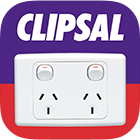
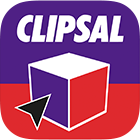
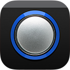

Case Study
Clipsal by Schneider Electric
Clipsal is Australia's largest brand in electrical accessories with offices worldwide.
Since 1920 they have grown to become a market leader in data communications, industrial and home automation
Hold 18,000 products in your hand
Enabled's first project with Clipsal was an iPhone, iPad and Android version of their Trade Product Guide
The Trade Product Guide - the much-used paper based guide which was as good as it was possible to get, in print form. The mobile versions are more portable, easy to use, and are fully searchable.
Users can tap and scroll through the user-friendly interface instead of flicking through hundreds of pages. And they can still bookmark frequently used products, just in an easier way.
iCat lets users create job product lists and easily send these lists to suppliers as an order or clients as a quotation.
The original app launched at the Clipsal 500 race in 2011, quickly achieving over 50,000 downloads and has maintained a five star review status.
For the 2013 release the opportunity was taken to rebuild the app from the ground up, re-inventing it from a catalogue app and transforming it into a true platform to meet the needs of trade community, including HTML5 extensions, social feeds and sharing mechanisms.
Augmented Reality light switches?
What a bright idea!
iSelect was created to help the homeowner or homebuilder take the guess work out of visualising Clipsal products within their home.
In the most recent upgrade of the app Enabled added a State-of-the-art markerless Augmented Reality function.
This allows the user to point their iPad at any existing light switch in their home and transform it virtually into any number of newer Clipsal light switches.
The App then tracks the real world switch so the user can move around the virtual switch to view it at any angle.
Clipsal + Microsoft PixelSense prototype
We created a new way to promote engagement within Clipsal's Interactive Display Centres using large format touch technology.
Being experts in touch, Enabled constructed an interactive experience using Microsoft PixelSense in conjunction with the Samsung touch table the SUR40.
This application allows the user to place a number of Clipsal products directly onto the screen of the table. On the back of the product we place a special marker (like a QR code).
Using infrared sensors the table is able to read this marker, recognise the product and display related information to the user.
One site fits all
With mobile and touch applications covered, Clipsal’s next priority was to bring their website up to grade.
Enabled were invited to assist with the reconstruction of this website, to the extent that our project managers were responsible for coordinating a number of internal teams and external contractors in order to complete this significant website.
- This website implements responsive design at 3 resolutions.
- Extensive integration of product databases
- Significant amount of photographic and product information.
- Social aspects including a "My Clipsal" profile to allow Electricians to securely maintain an active profile. This profile is made available to potential customers through the Clipsal referral program and also allows Electricians to manage their loyalty points which can be exchanged for Clipsal products and prizes.
- "Locate an Electrician" provides the general public a search tool so they can match their specific electrical needs to providers in their local area.
Watch this space.
We're always exploring what will make life easier with new technologies.
In this case, iCat on the Apple Watch.
Since choosing Enabled as our mobile application developer, we haven’t looked back. Their expertise and creativity took our initial concept to a new level, and the end result was incredibly well received by our target users. The work they do for us in particular iCat has been the most well received software development and launches we've experienced.
But wait there's more.
There's more to show you but you should see our other Case Studies.

See our other Case Studies
Have a look at some of our Case Studies or Let's Chat about making something together.
-
Clipsal by Schneider Electric
Getting people excited about electrical accessories is not an easy job. But Clipsal with its omni-channel approach has won customers over.
View Case Study -
Western Australia Housing
The government body transforms the way housing inspections are conducted with a robust mobile solution.
View Case Study